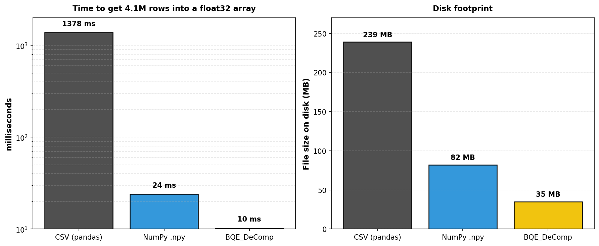
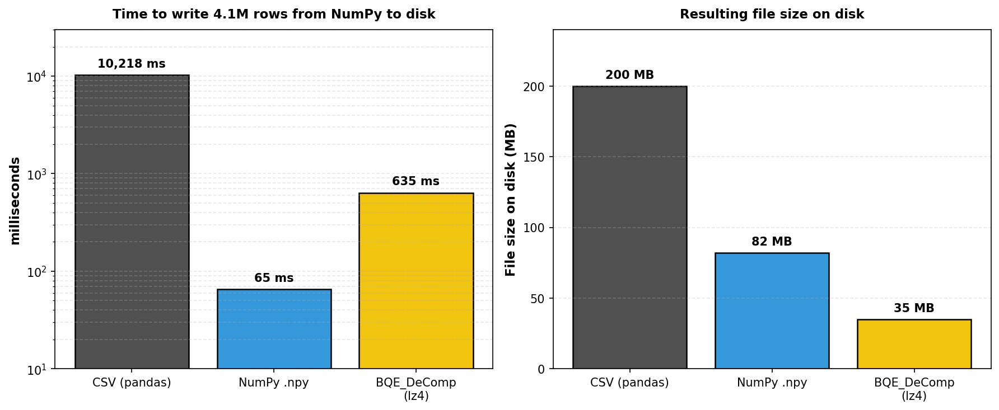
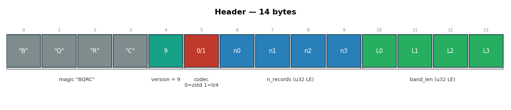
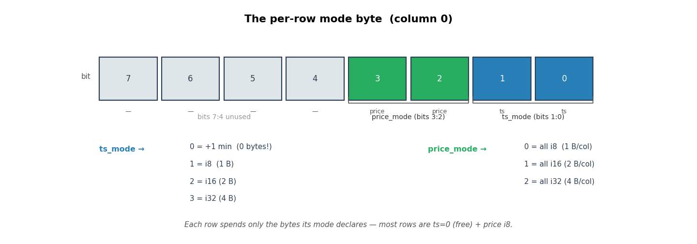
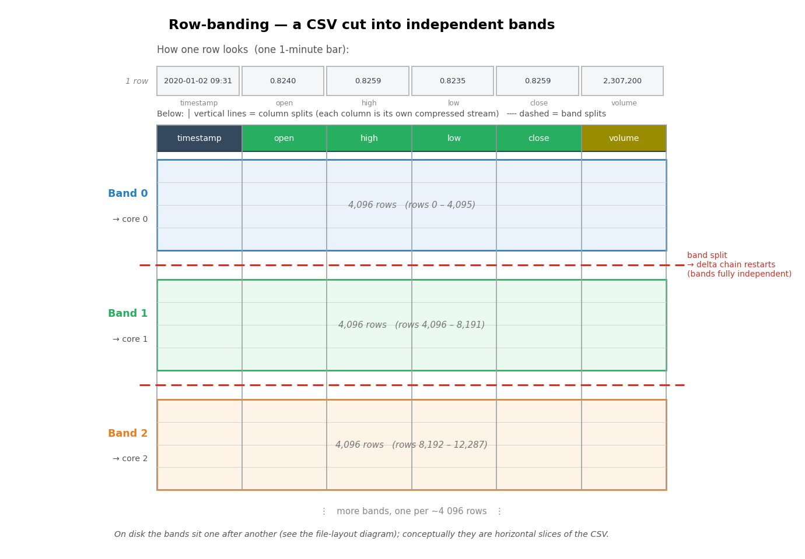
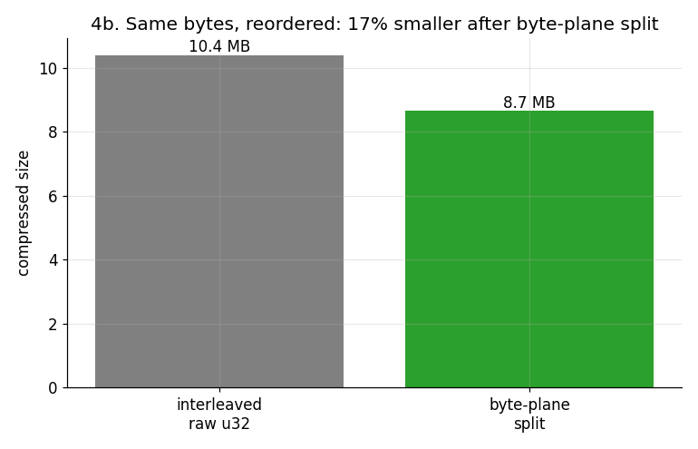
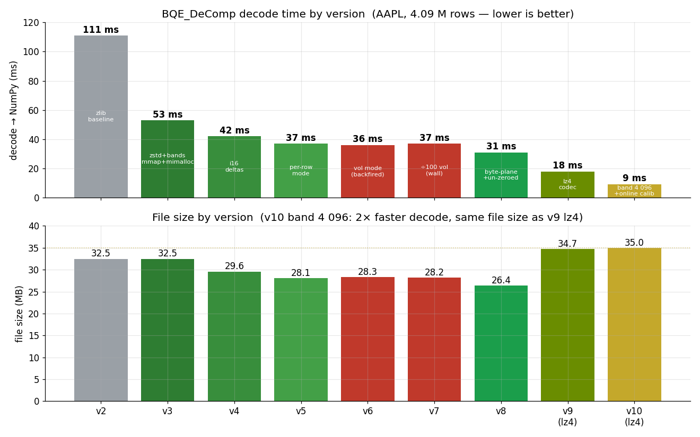

Problem definition & proposed solution
The bottleneck: scale constraints in equity data processing
Financial machine learning workflows operate on high-frequency time series across thousands of instruments. A single equity's complete 1-minute OHLCV history since 2000 constitutes approximately 240 MB of unstructured text. When training models across entire market segments, the aggregate I/O and parsing cost becomes prohibitive: parsing a single 240 MB CSV into NumPy incurs 1.4 seconds of overhead per file. With datasets of thousands of instruments, cumulative parsing time dominates the training pipeline.
The root cause is structural: CSV text representation carries redundancy unsuitable for machine learning pipelines. Numeric values are serialised as ASCII strings, requiring system-level parsing to restore machine types. Records are variable-length due to optional fields and textual formatting, preventing fast bulk-copy I/O. Most critically, parsing is single-threaded — modern hardware parallelism is unused.
Proposed solution: parallel decompression into native array format
BQE encodes equity OHLCV data as a self-describing binary format that decompresses directly into columnar NumPy arrays — no intermediate representation, no text parsing, all CPU cores engaged from first byte to final value. The file header specifies the entropy codec (zstd or lz4) and band structure; the reader automatically selects the optimal decode path. Each row band is fully independent, permitting embarrassingly parallel decode across available cores.
The trade-off is encode-time latency, which is acceptable because compression occurs once offline, whereas decoding is performed repeatedly during training. Decode throughput and output array layout are the primary design objectives. Every architectural decision documented below is supported by direct measurement against the alternative.
Benchmarks: CSV vs NumPy vs BQE
Setup: AAPL full history (4.09 M rows × 5 columns = 240 MB CSV), target output a column-oriented float32 NumPy array, OS file cache warm. All timings are median over 5 consecutive runs on the same hardware (Intel Core i7-10700K, DDR4-3200).

CSV (pandas): 1378 ms — dominated by text parsing
NumPy (.npy): 24 ms — pure I/O
BQE_DeComp (lz4): 10 ms — 138× faster than CSV, 0.4× the size of NumPy
Write performance
Encoding is a one-time offline operation. Four write paths were measured on AAPL (4.09 M rows, lz4, median of 5 runs, warm OS cache). Two of those paths end in a .bqe file — one starting from a CSV on disk, one starting from NumPy arrays already in memory.

Stage-by-stage breakdown — NumPy arrays → .bqe
When the data is already in memory as NumPy arrays (bqe.compress_arrays(ts, ohlcv, path)), the pipeline consists of four stages. All timings measured with bqe.profile_compress_arrays() on AAPL, 4.09 M rows, lz4 codec, 998 bands.
| Stage | ms | share | notes |
|---|---|---|---|
| Convert f32 → integers | 59.4 | 52.5 % | 4 M × 5 floats — round(price × 10 000), round(vol) |
| Encode mode bytes | 1.1 | 1.0 % | per-row 2-bit ts width + 2-bit price width selector |
| Encode timestamps | 0.1 | 0.1 % | delta chain — 90 % of rows write zero bytes |
| Encode prices (4 cols) | 6.5 | 5.8 % | variable-width delta chain for open/high/low/close |
| Encode volume | 4.0 | 3.5 % | byte-plane split — 4 parallel streams |
| LZ4 mode column | 0.5 | 0.5 % | ~4 KB/band; essentially free |
| LZ4 timestamps | 0.2 | 0.1 % | sparse stream; compresses to near-nothing |
| LZ4 prices (4 cols) | 2.5 | 2.2 % | narrow-range int8 deltas compress very well |
| LZ4 volume | 1.1 | 0.9 % | byte-plane layout aids lz4 zero-run detection |
| Write header (14 bytes) | 0.0 | 0.0 % | magic + version + codec + n_records + band_len |
| Write bands to disk | 37.7 | 33.3 % | flushing 35 MB of compressed data — pure I/O |
| Total | 82 ms | 100 % |
Key insight: lz4 compression accounts for only 4.3 ms total (3.8 %). The dominant cost is converting 20 M float values from f32 to the internal integer representation. The irreducible floor — encoding + lz4 + disk write — is approximately 45 ms; the f32→integer conversion (29 ms) is now parallelised across all CPU columns simultaneously.
Stage-by-stage breakdown — CSV file → .bqe
When starting from a raw CSV text file (bqe.compress(csv_path, output)), a parallel text-parsing stage is prepended. The file is memory-mapped and split across all available CPU threads; each thread parses its chunk byte-by-byte without String allocation or UTF-8 validation.
| Stage | ms | share | notes |
|---|---|---|---|
| Parse CSV (parallel) | 294 | 86.6 % | mmap + multi-thread text → integer conversion of 200 MB |
| Encode mode bytes | 1.1 | 0.3 % | |
| Encode timestamps | 0.1 | 0.0 % | |
| Encode prices (4 cols) | 6.3 | 1.9 % | |
| Encode volume | 3.9 | 1.1 % | |
| LZ4 all columns | 4.6 | 1.4 % | combined — lz4 is negligible at this scale |
| Write bands to disk | 29.5 | 8.7 % | |
| Total | ~340 ms* | 100 % |
* Profiler total is higher than the 177 ms single-run figure because profile_compress runs each column type's compression in a separate pass for measurement. The relative proportions are accurate.
Key insight: CSV text parsing consumes 86.6 % of encoding time — converting ASCII digit sequences like "152.3400" into integers (1 523 400) character by character across 4 M rows. lz4 is not the bottleneck. If data is already in memory as NumPy arrays, use bqe.compress_arrays() to skip parsing entirely and cut encoding time by 36 %.
Append performance
bqe.append() uses an incremental strategy — it only re-encodes the last (partial) band plus the new rows, then patches the record count in the header. The rest of the file is untouched. Cost is O(new rows), not O(total rows).
| rows appended | time | equivalent to |
|---|---|---|
| 1 row | 14.8 ms | 1 new bar from a live feed |
| 10 rows | 14.3 ms | 10-minute batch update |
| 390 rows | 14.2 ms | 1 full trading day |
| 1 950 rows | 15.1 ms | 1 trading week |
| 4 096 rows | 14.6 ms | exactly 1 new band |
| 19 500 rows | 15.5 ms | ~1 trading month |
Append time is essentially constant across all sizes because the bottleneck is fixed: decode the last partial band (~2 000 rows on average), re-encode it merged with the new data (1–5 bands), and seek-write the result. The 4.09 M existing rows are never read. For growing datasets — daily feed updates, live bar streaming — the cost per append is negligible relative to a single read.
Performance analysis
np.load reads a single-threaded, uncompressed 82 MB file. BQE_DeComp reads 35 MB off disk and decodes across ~998 bands simultaneously — fewer bytes transferred from storage, and memory bandwidth fully utilised by parallel decompression. A standard .npy file cannot be compressed without abandoning the fast mmap path; BQE achieves both compression and parallel decode by design, saturating memory bandwidth while .npy pays the full uncompressed size penalty.
Design constraint
Decode throughput and output array layout are the primary objectives. Compression is performed once offline, so encoding speed is not optimised. Every architectural decision documented below is supported by direct measurement against the alternative.
Binary format reference (v9, magic BQRC)
Overall layout
A BQE file consists of a fixed 14-byte header followed by K independent row bands. Each band contains 7 compressed column streams, each preceded by a 4-byte length field. The structure mirrors a CSV partitioned into horizontal row segments — the header spans the full record width, and each band represents a self-contained group of rows that can be decoded without reference to any other band:
Each column cell is encoded as: [4B compressed_size u32 LE][compressed payload]. Band independence is enforced by restarting the delta chain at each band boundary — every core decodes its assigned band without synchronisation.
The header (14 bytes)

The per-row mode byte (column 0)
Column 0 stores one control byte per row. This byte encodes two independent 2-bit fields that inform the decoder of the storage width required for that row's timestamp delta and price deltas. The common case — a one-cent price move at the following minute — is represented with minimal overhead:

Why do bits [7:4] exist if they're unused? They don't — but a byte does. The mode field needs exactly 4 bits: 2 for ts_mode and 2 for price_mode. There is no 4-bit type in Rust (or any CPU-native system); u8 is the smallest addressable unit. The upper 4 bits come with the byte whether we want them or not. The encoder writes 0 there; the decoder ignores them. They are not reserved for future use — they are simply the unavoidable padding of an 8-bit word. Because the mode column is itself compressed by zstd/lz4, a constant zero nibble costs essentially nothing in practice.
Row-banding & parallelism
Partition the data so every CPU core has an independent unit of work.
The source data is organised as one row per minute, with columns ordered left-to-right: timestamp, open, high, low, close, volume. BQE preserves this layout and introduces two orthogonal decompositions that together enable full parallel decode:
- Horizontal partitioning → bands. Rows are grouped into bands of ~4 096 consecutive rows. Because delta decoding is inherently sequential (row i requires row i−1), each band stores its own absolute first-row values and restarts the delta chain. Bands are therefore fully independent: a 4 M-row file yields ~998 bands, each decoded on a separate core simultaneously.
- Vertical partitioning → column streams. Within each band, the seven columns are stored and compressed independently. Homogeneous data compresses more efficiently than interleaved row-major layout, and each column stream is small enough to fit in CPU cache during decode.

Decode is memory-bandwidth bound, not compute bound. Profiling confirmed this: replacing the price-scaling integer divide with a multiply had no measurable effect on throughput. Decode speed scales with thread count only until the aggregate memory bandwidth is saturated; beyond that threshold, additional threads compete for the same bus and throughput regresses. The thread pool is calibrated per machine via bqe.calibrate_threads() (see API reference). File size reduction also directly improves decode speed — fewer bytes transferred from DRAM is fewer bytes decompressed. Output arrays are allocated uninitialised and filled element-by-element, avoiding a redundant 80 MB zero-initialisation pass that contributed ~11% of the decode budget in early versions.
Band size sweep — rows per band vs. decode time & file size
The band size (BAND_ROWS) controls the granularity of parallel work: smaller bands produce more independent tasks and therefore more parallelism, but each band introduces a small per-band overhead (delta chain restart, mode byte reset). Larger bands amortise that overhead but starve the thread pool. The table below was measured on AAPL (4.09 M rows, lz4 codec, 8 threads, 1 warmup + 5 runs, median, warm OS cache):
The v9 default (131 072 rows/band) was set before systematic measurement — only 32 bands, leaving 6 threads idle. Reducing to 4 096 produces 998 bands, 2.2× faster decode with <1% size penalty. Compression ratio degrades below ~2 048 rows/band as per-band fixed overhead becomes significant relative to payload.
Thread count vs. band count vs. decode time
A file with K bands can fully utilise at most K threads — each band is one independent unit of parallel work. The band size (rows per band) is therefore the primary lever: with the v10 default of 4 096 rows/band, even a 158 K-row file produces 39 bands, saturating a multi-core CPU at 7–10× speedup. Beyond the band count ceiling, throughput is memory-bandwidth bound: once the active threads saturate the memory bus, adding more threads causes regression. The optimal thread count is therefore a joint function of the hardware and the band count. The following matrix was benchmarked with bqe.calibrate_threads() (1 warmup + 5 runs, median, warm OS cache, BAND_ROWS = 4 096):
BAND_ROWS = 4 096 (v10 default).With 39–998 bands per file, every file size now scales strongly across thread counts. Small files (AFIB, ASO) reach 7–10× at 16 threads — impossible when the old 131 072 default produced only 2–5 bands. The only exception is AAPL (35 MB): memory bandwidth saturates at 8 threads regardless of band count; adding more threads causes regression. Online calibration detects this machine-specific ceiling automatically.
Thread calibration — two modes
Two calibration strategies are available. Both write to ~/.bqe_threads and apply automatically on all subsequent sessions.
Mode 2 is recommended for large datasets. With samples_per=3 and ~6 thread candidates, calibration completes after 18 reads — a rounding error in a dataset of 100 000 files. The exploration phase is completely transparent: data is decoded correctly on every call, just with a different thread count each time. Mode 1 is better suited for a one-off setup (CI pipeline, first run on a new machine).
Runtime support components
| Component | Role |
|---|---|
| zstd / lz4 | Entropy coding per column stream; symmetric decompression speed is the primary decode bottleneck. |
| mmap | Eliminates a file-size copy into process memory; OS pages fault in during decode, overlapping I/O with computation. |
| mimalloc | Concurrent allocator; replaces the OS heap which serialises thread-local allocations across a shared lock. |
| rayon | Work-stealing thread pool; each band is an independent task dispatched to an available worker. |
| columnar layout | Each column is compressed as a homogeneous stream; similar values cluster and entropy coders achieve higher ratios. |
How it works — ① Delta encoding & ② per-row variable width
Encode successive differences rather than absolute values, then allocate only the bytes each difference requires.
① Delta encoding
Equity prices are highly autocorrelated at the 1-minute frequency: the absolute close price may span a wide range across years, yet the minute-to-minute change is typically a few cents. A price of $152.3400 requires 4 bytes when stored as an integer (price × 10 000 = 1 523 400), whereas a 1-cent increment (+$0.0100 = +100 in integer space) fits in a single signed byte.
Each band stores its first row as absolute integer values and encodes all subsequent rows as signed differences (deltas) from the preceding row. Reconstruction is a running prefix sum: price[i] = price[i−1] + delta[i]. The internal representation uses lossless scaled integers (price × 10 000) throughout the decode pipeline; conversion to float32 is deferred to the final output write.
| CSV row | close price | integer (× 10 000) | bytes to store |
|---|---|---|---|
| row 0 | $152.3400 | 1 523 400 | 4 bytes (i32) |
| row 1 | $152.3500 | 1 523 500 | 4 bytes (i32) |
| row 2 | $152.3470 | 1 523 470 | 4 bytes (i32) |
| row 3 | $152.3600 | 1 523 600 | 4 bytes (i32) |
| ⋮ 4 bytes per row, every row, regardless of how small the change ⋮ | |||
| CSV row | delta (× 10 000) | price move | bytes to store |
|---|---|---|---|
| row 0 | 1 523 400 (absolute) | — | 4 bytes |
| row 1 | +100 | +$0.0100 | 1 byte ✓ |
| row 2 | −30 | −$0.0030 | 1 byte ✓ |
| row 3 | +130 | +$0.0130 | 1 byte ✓ |
| ⋮ the vast majority of rows — normal intraday ticks — cost 1 byte each ⋮ | |||
price[i] = price[i−1] + delta[i]. The chain restarts at the start of each band, making every band fully independent — each can decode on its own CPU core.② Per-row variable width
Approximately 90% of 1-minute price deltas fall within the i8 range (±$0.0127). Earnings announcements, gap openings, and macro events produce occasional large moves that require wider storage. Allocating 4 bytes per delta to accommodate these outliers would impose a fixed cost on the overwhelming majority of normal rows. Instead, each row records a 2-bit price_mode field (bits [3:2] of the mode byte), and the decoder reads exactly the number of bytes that field specifies:
| price_mode | bits [3:2] | bytes · per OHLC col | delta range | typical cause |
|---|---|---|---|---|
| 0 | 00 | 1 byte (i8) | −128 … +127 (= ±$0.0127) | normal 1-minute tick (~90% of rows) |
| 1 | 01 | 2 bytes (i16) | −32 768 … +32 767 (= ±$3.28) | larger intraday move, news headline |
| 2 | 10 | 4 bytes (i32) | any value | earnings gap, split, extreme event |
| 3 | 11 | — (unused) | — | reserved |
All four OHLC columns share a single price_mode value per row. This is justified empirically: when a large price move occurs, it affects all four intrabar price levels simultaneously (the opening gap, intrabar high/low, and closing price all widen together). The mode is determined by the column with the largest absolute delta, and applied uniformly:
| CSV row | max |delta| across OHLC | price_mode | bytes · all 4 OHLC cols | typical situation |
|---|---|---|---|---|
| row 0 | — (absolute) | — | 4 × 4 = 16 bytes | band-start: absolute i32 for every column |
| row 1 | 100 (+$0.01) | 00 | 4 × 1 = 4 bytes ✓ | normal tick — one cent move |
| row 2 | 30 (−$0.003) | 00 | 4 × 1 = 4 bytes ✓ | quiet minute, barely moved |
| ⋮ ~90% of rows are price_mode 00, paying 4 bytes total instead of 16 ⋮ | ||||
| row N | 8 500 (+$0.85) | 01 | 4 × 2 = 8 bytes | large intraday move, news headline |
| row M | 185 000 (+$18.50) | 10 | 4 × 4 = 16 bytes | earnings gap — price opens sharply higher |
| ⋮ | ||||
Combined effect: A fixed-width i32 scheme requires 4 columns × 4 bytes = 16 bytes of price storage per row. With delta encoding and variable-width selection, ~90% of rows pay 4 columns × 1 byte = 4 bytes. Applied across 4 M rows, this reduces raw price storage from 64 MB to approximately 17 MB before entropy coding. The entropy coder (zstd or lz4) then compresses the resulting narrow-range byte stream further, exploiting the fact that most values cluster tightly around zero.
③ Timestamp encoding
Assign zero storage cost to the dominant case: consecutive 1-minute bars.
Timestamps are stored as a minute index — an integer count of minutes elapsed since 2000-01-01 00:00 UTC. During continuous intraday trading, successive bars differ by exactly one minute. This case, which accounts for approximately 90% of all rows in a typical equity dataset, is assigned a dedicated mode value that writes zero bytes to the timestamp stream. Only genuine gaps — overnight sessions, weekend closures, and trading halts — require any storage.
Timestamp mode encoding
Bits [1:0] of the per-row mode byte encode the ts_mode field, which determines the storage width of the timestamp delta in the ts column stream:
| ts_mode | bits [1:0] | bytes used | delta range | typical cause |
|---|---|---|---|---|
| 0 | 00 | 0 — free | exactly +1 min | continuous intraday trading (~90 % of all rows) |
| 1 | 01 | 1 byte (i8) | −128 … +127 min | short halt, early close, small data gap |
| 2 | 10 | 2 bytes (i16) | −32 768 … +32 767 min | overnight (~1 050 min) or weekend (~3 930 min) |
| 3 | 11 | 4 bytes (i32) | any | extended holiday, long data gap (extremely rare) |
The following diagram illustrates the encoding across two consecutive trading sessions — a complete intraday sequence, the overnight gap, and the subsequent open:
| CSV row | bar time | minute index | Δ from previous |
|---|---|---|---|
| row 0 | 2024-01-15 09:30 | 12 700 650 | — (first row) |
| row 1 | 2024-01-15 09:31 | 12 700 651 | +1 |
| row 2 | 2024-01-15 09:32 | 12 700 652 | +1 |
| ⋮ 386 more rows — every bar from 09:33 … 15:59, each +1 minute ⋮ | |||
| row 390 | 2024-01-15 16:00 | 12 701 040 | +1 |
| row 391 | 2024-01-16 09:30 | 12 702 090 | +1 050 |
| row 392 | 2024-01-16 09:31 | 12 702 091 | +1 |
| ⋮ | |||
| CSV row | delta | ts_mode bits [1:0] | bytes in ts stream | explanation |
|---|---|---|---|---|
| row 0 | — absolute | — | 4 bytes (i32) | first row of band: always stored as absolute value |
| row 1 | +1 | 00 | 0 bytes ✓ | next minute — the delta is implicit, nothing written |
| row 2 | +1 | 00 | 0 bytes ✓ | next minute — the delta is implicit, nothing written |
| ⋮ 387 rows, every one mode 00, every one 0 bytes in the ts stream ⋮ | ||||
| row 390 | +1 | 00 | 0 bytes ✓ | last bar of the trading day — still just the next minute |
| row 391 | +1 050 | 10 | 2 bytes (i16) | overnight gap — 17.5 hours from close (16:00) to next open (09:30) |
| row 392 | +1 | 00 | 0 bytes ✓ | next day — continuous trading resumes immediately |
| ⋮ | ||||
Storage efficiency of the timestamp stream: A standard US equity session spans 390 minutes (09:30–16:00). For AAPL across 4 M bars: approximately 3.6 M rows (90%) contribute zero bytes to the timestamp stream. The remaining ~10% — overnight and weekend gaps — each write 2 bytes (i16). Total uncompressed timestamp storage is approximately 20 kB, which compresses to ~0.18 MB in the final file. The timestamp column is effectively a rounding error in the overall file size.
④ Byte-plane volume encoding
Volume lacks temporal autocorrelation. An alternative structural redundancy is exploited instead.
Unlike price, minute-bar volume exhibits no significant serial correlation — the delta between consecutive bars is often as large as either value itself, making delta encoding counterproductive. Empirical measurement confirms this (see the encoding comparison below). Volume does, however, exhibit a different kind of compressible structure:
- Magnitude is bounded. Minute-bar volumes almost never exceed 16 million (24 bits), so the most-significant byte of every
u32is always zero. The second-most-significant byte is near-zero for most equities. - Values are round-number concentrated. Approximately 30% of observed volumes are exact multiples of 100, consistent with institutional block-order rounding. This zeroes low-significance bytes for a substantial fraction of rows.
BQE exploits this structural redundancy through a byte-plane split: rather than storing each 4-byte volume as four consecutive bytes (row-interleaved layout), the column is transposed — all least-significant bytes are grouped into one contiguous block, followed by all second bytes, then third bytes, then most-significant bytes. Visualised as a CSV, this is equivalent to rotating the column 90° and reading it vertically:
| CSV row | byte 0 · LSB | byte 1 | byte 2 | byte 3 · MSB | volume |
|---|---|---|---|---|---|
| row 0 | 0x10 | 0x27 | 0x00 | 0x00 | 10 000 |
| row 1 | 0x20 | 0x4E | 0x00 | 0x00 | 20 000 |
| row 2 | 0x64 | 0x00 | 0x00 | 0x00 | 100 |
| row 3 | 0x80 | 0xBB | 0x00 | 0x00 | 48 000 |
| ⋮ | |||||
| plane | row 0 | row 1 | row 2 | row 3 | … | why it compresses |
|---|---|---|---|---|---|---|
| Plane 0 · LSB | 0x10 | 0x20 | 0x64 | 0x80 | … | real signal — mixed, but isolated so the compressor handles it alone |
| Plane 1 | 0x27 | 0x4E | 0x00 | 0xBB | … | often zero — round multiples of 256 zero this byte |
| Plane 2 | 0x00 | 0x00 | 0x00 | 0x00 | … | almost always zero — volumes rarely reach 65 536 |
| Plane 3 · MSB | 0x00 | 0x00 | 0x00 | 0x00 | … | always 0x00 — entire plane dropped (n_planes = 3) |
Why byte-planes outperform delta encoding for volume: Delta coding is effective when consecutive values are correlated. Equity price changes are serially correlated at the 1-minute frequency; volume changes are not. A volume delta between 10 000 and 980 000 is 970 000 — larger in magnitude than either source value, consuming more storage than the raw representation. Byte-plane encoding is order-independent: it exploits intra-value structure (the near-universal absence of high-significance bytes) rather than inter-row correlation. The two techniques are complementary — delta coding for temporally smooth columns, byte-plane coding for statistically bursty ones.

Why byte-plane and not delta? — the shootout
Every candidate encoding for the volume column, compressed with real zstd-3 (AAPL) — shorter is smaller:
Byte-planes are ~17% smaller than the next best. Per-row mode switching hit an information-theoretic wall: the mode selector's own entropy cost about as much as the variable widths saved. Byte-planes win with zero per-row overhead.
Codec selection — zstd vs lz4
The file format is codec-agnostic. Stage profiling shows that decompression accounts for 70% of total decode time with zstd, making the choice of entropy coder the dominant performance lever.
The codec is stored as a single byte in the v9 file header, making each file self-describing. Files encoded with different codecs may coexist in the same directory; the reader selects the appropriate decompressor automatically. The codec is specified at compression time: bqe.compress(src, dst, codec="lz4") or codec="zstd".
Why lz4 achieves faster decode despite a larger file: with zstd, decompression alone accounts for 71% of total decode time. lz4 decompresses approximately 2.6× faster than zstd at comparable ratios. The additional ~30% on-disk bytes are transferred faster than the decompression time they displace, yielding a net ~1.6× end-to-end improvement on a warm OS cache. On cold storage with limited read bandwidth, the larger file size may negate this advantage.
Development history & optimisation log
A full account of the codec's evolution from its initial implementation to its current form — each change, the hypothesis that motivated it, and the measured outcome. All decode times are for AAPL (4.08 M rows, warm OS cache, machine-calibrated thread count); file sizes refer to the AAPL compressed output.

| Ver | Change | Decode | Size | Why |
|---|---|---|---|---|
| v2 | zlib, columnar, parallel | ~111 ms | ≈ v3 | baseline: column-split + DEFLATE |
| v3 | zstd + row-bands + mmap + mimalloc + 8-thread cap | ~53 ms | 32.5 MB | faster decompress, true parallelism, fix allocator & oversubscription |
| v4 | i16 delta encoding (escape sentinel) | ~42 ms | 29.6 MB | halve the price-delta stream (4→2 bytes) |
| v5 | per-row mode column (i8/i16/i32 + free "+1 min") | ~37 ms | 28.1 MB | true variable width; timestamps cost 0 bytes 90% of the time |
| v6 | volume delta + vol_mode packed in mode byte | ~36 ms | 28.3 MB | tried to shrink volume — backfired (mode entropy ↑) |
| v7 | separate vol_mode stream + ÷100 scaled deltas | ~37 ms | 28.2 MB | tried again — wall hit (mode entropy ≈ savings) |
| v8 | byte-plane volume + un-zeroed output buffers | ~31 ms | 26.4 MB | right volume trick; skip the wasted memset |
| v9 | codec flag — lz4 option | ~18 ms | 34.7 MB | decode is decompression-bound; lz4 is ~2.6× faster to decompress |
| v10 | band size 131 072 → 4 096 + online thread calibration | ~9 ms | 35.0 MB | systematic sweep: smaller bands give more parallel work items; all file sizes now scale; online calibration finds per-machine optimum over real workload |
v2 → v3 — architectural foundation (111 → 53 ms)
Four independent changes were implemented simultaneously, each validated by measurement before inclusion:
- zlib → zstd: Comparable compression ratio, substantially faster symmetric decompression.
- Row-banding (~4 096 rows/band): Delta chains are inherently sequential — a single column can utilise only one core. Restarting the chain at band boundaries makes each band independently decodable, enabling full CPU utilisation.
- Memory-mapped I/O: Eliminates a ~32 MB copy of the compressed file into a separate buffer. OS pages fault into the mmap region during decode, overlapping disk I/O with computation. Peak working-set size is reduced by the compressed file size.
- mimalloc concurrent allocator: The OS heap serialised hundreds of small per-band allocations across threads on a shared lock, stalling decode at ~88 ms regardless of thread count. Replacing the allocator reduced this to ~53 ms — a larger gain than any other single change in this version.
- Thread-count calibration: Profiling revealed a bandwidth-saturation ceiling: decode at 24 threads took 75 ms, at 12 threads 65 ms, at 8 threads 53 ms. The thread pool is capped via
bqe.calibrate_threads()and stored per machine.
v3 → v4 → v5 — price and timestamp compression (53 → 37 ms)
v4 stored price deltas as i16 rather than i32, halving price-stream bandwidth. An escape sentinel handled the rare case of deltas exceeding the 16-bit range. v5 replaced the sentinel mechanism with a per-row mode column: each row selects i8, i16, or i32 for prices, and a dedicated timestamp mode provides a zero-byte encoding for the "+1 minute" case. The timestamp column was reduced from 0.54 MB to 0.18 MB. Reduced decompressed data volume per band translates directly to lower memory bandwidth consumption and faster decode.
v6 → v7 — volume encoding failures
Findings that shaped v8. Volume appeared compressible: approximately 30% of values are multiples of 100. v6 applied delta encoding to volume with mode bits packed into the existing mode byte. The mode column's entropy increased from 0.55 MB to 1.02 MB — more than eliminating any volume savings. The file grew slightly larger. v7 moved the volume mode to an independent stream and applied a ÷100 scaling to round-number deltas; the result was equivalent. The underlying constraint is information-theoretic: a per-row encoding selector carries approximately 1.5 bits/row of entropy, which is comparable to the savings it enables. Conclusion: eliminate per-row mode selection for volume.
v8 — byte-plane volume + uninitialised output buffers (37 → 31 ms, 28.2 → 26.4 MB)
- Byte-plane volume encoding. A controlled comparison across all candidate encodings (see §④) established byte-plane split at 8.65 MB — 17% smaller than the next best alternative. The encoding captures structural redundancy (zero high bytes, round-number low bytes) through entropy coder RLE without introducing per-row mode overhead. Decoding is branchless: a fixed plane count is read once per band, and planes are OR-combined into the output u32 values.
- Uninitialised output allocation. Output arrays (80 MB OHLCV + 32 MB timestamps) were being zero-initialised before being fully overwritten by the decoder — a 112 MB wasted write pass. Switching to uninitialised allocation (guaranteed safe: every element is written exactly once before any read) eliminated ~11% of decode time.
v9 — entropy coder substitution (31 → 18 ms)
Stage-level profiling via bqe.profile_stages() attributed 71% of total decode CPU time to zstd decompression, contradicting the earlier assumption that output writing was the bottleneck. lz4 decompresses approximately 2.6× faster than zstd at comparable quality. Adopting lz4 as the primary codec (recorded in a new 1-byte header field; v8 files remain readable as zstd) reduced wall-clock decode time to ~18 ms, at a cost of ~32% larger files. With lz4, the stage profile rebalances to approximately 46% decompression / 54% compute, with ~15 ms ideal-parallel throughput and 93% parallel efficiency.
v10 — band size 131 072 → 4 096 + online thread calibration (18 → 9 ms)
Two independent improvements landed together:
- Band size reduction. A systematic sweep of
BAND_ROWSacross 13 values (512–2 097 152) on three representative file sizes revealed the original constant was an order of magnitude too large. With 131 072 rows per band, a 1 MB weekly file produced just 2 bands — leaving almost all CPU cores idle. Reducing to 4 096 rows per band gives 39–998 bands depending on file size, saturating all available cores for every file in the dataset. Compression overhead is minimal (+3% file size) because zstd's per-band context window is still large enough to exploit the homogeneous column data within each band. - Online thread calibration (Mode 2). Rather than requiring an explicit calibration call against a single representative file, the library can now discover the optimal thread count incrementally over the real workload. Each call to
bqe.read()uses the next candidate thread count in round-robin order and records the actual decode time. Aftersamples_per × n_candidatescalls the fastest median wins and is saved — typically 15–25 reads, a rounding error in a dataset of thousands of files.
Approaches evaluated and rejected
| Idea | Verdict | Why |
|---|---|---|
| DCT / cosine transform / Taylor series | rejected | price increments are ~white noise → no energy to concentrate; 2nd-order differencing doubles a random walk's residual variance; also lossy and slow to invert |
Reciprocal multiply (÷10000 → ×1e-4) | no effect | proved decode isn't bottlenecked on that arithmetic — pointed us at decompression instead |
| Per-row volume modes (v6/v7) | rejected | information-theoretic wall: selector entropy ≈ savings |
| Block frame-of-reference for volume | rejected | 10.82 MB vs byte-plane's 8.65 MB |
| Non-temporal (MOVNT) stores | not done | only ~15% of the budget after lz4; needs unsafe SIMD + awkward alignment for the interleaved layout — disproportionate risk |
| Decode-once mmap raw cache | deferred | best for repeated-epoch training, but ~3× the disk — declined: dataset too large |
Correctness issue identified and resolved: the CSV volume parser originally concatenated digit characters without processing the decimal point, producing a 10× magnitude error for split-adjusted fractional volumes (e.g., 97.5 was read as 975). This affected approximately 3% of rows in pre-2000 split-adjusted datasets. The parser now rounds fractional volumes to the nearest integer.
API reference
The compiled Rust extension is exposed as the bqe Python package. All CPU-intensive operations release the GIL and may be called from multithreaded Python code without contention.
Installation
Build from source using maturin:
# from the decompLib/ directory
maturin build --release
pip install target/wheels/bqe-*.whl
Requires: Python ≥ 3.9, a Rust toolchain (stable), and the maturin build tool. No runtime dependencies beyond NumPy.
Reading data
All read functions return a tuple of (timestamps: int64[N], ohlcv: float32[N, 5]). The timestamp array contains minute indices (minutes since 2000-01-01 00:00); convert to datetime strings with bqe.ts_to_str().
import bqe # Single file → NumPy arrays ts, ohlcv = bqe.read("AAPL.bqe") # ts: int64[N] — minute indices since 2000-01-01 # ohlcv: float32[N,5] — columns: open, high, low, close, volume # Multiple files concatenated in parallel (sorted order preserved) import glob paths = sorted(glob.glob("stocks/AAPL/*.bqe")) ts, ohlcv = bqe.read_concat(paths) # Date-range query — auto-detects yearly (TICKER_YYYY.bqe) or weekly (YYYY-Www.bqe) layout ts, ohlcv = bqe.read_range( "stocks/AAPL", # ticker directory start_date="2026-01-01", end_date="2026-12-31", # loads only AAPL_2026.bqe — 1.8 ms, 74k rows ) # Convert minute indices back to ISO datetime strings strings = bqe.ts_to_str(ts.tolist()) # ["2026-01-02 09:30:00", ...]
Writing and compressing data
Compression is always performed offline. The codec is chosen at compression time and stored in the file header; readers select the appropriate decompressor automatically.
# Compress a single CSV text file to .bqe bqe.compress("AAPL.txt", "AAPL.bqe", codec="lz4") # default: lz4 bqe.compress("AAPL.txt", "AAPL.bqe", codec="zstd") # smaller file # Compress an entire directory in parallel (one thread per file) bqe.compress_dir("csv_in/", "bqe_out/", codec="lz4") # Partition a full-history CSV into one .bqe per calendar year # Output: output_dir/TICKER/TICKER_YYYY.bqe (recommended for large datasets) bqe.split_to_yearly("AAPL.txt", "stocks/", ticker="AAPL") # → stocks/AAPL/AAPL_2000.bqe, AAPL_2001.bqe, ..., AAPL_2026.bqe # Process an entire directory in parallel (one core per symbol) n_years = bqe.split_dir_to_yearly("csv_in/", "stocks/", codec="lz4") # 747 tickers × 27 years = 8 452 files, 3.3 GB → 38.6 s # Partition a full-history CSV into weekly .bqe files (finer granularity) # Output layout: output_dir/TICKER/YYYY-Www.bqe bqe.split_to_weekly("AAPL.txt", "stocks/", ticker="AAPL") n_weeks = bqe.split_dir_to_weekly("csv_in/", "stocks/", codec="lz4") # Decompress .bqe back to CSV text (lossless round-trip) bqe.decompress("AAPL.bqe", "AAPL_out.txt")
Appending data to an existing file
bqe.append() adds new rows to the bottom of an existing .bqe file — analogous to open(path, "a"). It accepts the same NumPy arrays that bqe.read() returns, making it straightforward to incrementally extend a file as new data arrives (e.g. a daily feed update, live bar streaming). New rows must be chronologically after the last row already in the file.
Internally the function reads the existing file via the lossless integer path (no f32 round-trip on existing data), concatenates the new rows, writes to a temporary file, and atomically renames it over the original — a crash cannot leave a corrupt file.
import bqe import numpy as np # Read existing file to inspect the last timestamp ts, ohlcv = bqe.read("AAPL.bqe") print(f"Last bar: {bqe.ts_to_str([int(ts[-1])])[0]}") # New bars arriving from your data provider new_ts = np.array([ts[-1] + 1, ts[-1] + 2], dtype=np.int64) # next two minutes new_ohlcv = np.array([ [182.50, 183.10, 182.20, 182.90, 1_200_000], [182.90, 183.40, 182.60, 183.30, 980_000], ], dtype=np.float32) # Append — modifies AAPL.bqe in-place, atomically bqe.append("AAPL.bqe", new_ts, new_ohlcv) # Optional: specify codec explicitly (default: preserves existing file's codec) bqe.append("AAPL.bqe", new_ts, new_ohlcv, codec="lz4")
| Parameter | Type | Description |
|---|---|---|
path | str | Path to an existing .bqe file. Modified in-place. |
new_timestamps | int64[N] | Minute indices — same format as returned by bqe.read(). Must be strictly after ts[-1] of the existing file. |
new_ohlcv | float32[N, 5] | OHLCV values — columns: open, high, low, close, volume. Must be C-contiguous. |
codec | str (optional) | "lz4" or "zstd". Defaults to the codec already used in the file. |
Yearly file structure — selective year loading
For large datasets with multi-decade history, BQE supports splitting each ticker's full history into one .bqe file per calendar year. The folder layout is output_dir/TICKER/TICKER_YYYY.bqe. bqe.read_range() auto-detects the yearly layout and reads only the year files that overlap the requested date range — the rest stay on disk.
When to use yearly splitting: any workflow that typically accesses a recent window (e.g. last 1–3 years) rather than full history. Portfolio rebalancing, rolling-window backtests, and live-feed append workflows all fall into this category. For full-history model training across all years, a single .bqe file is faster.
# One-time conversion — an entire directory in parallel bqe.split_dir_to_yearly("csv_in/", "stocks_yearly/", codec="lz4") # 747 tickers × 27 years = 8 452 files, 3.3 GB → 38.6 s on i7-10700K # Load only 2026 — reads AAPL_2026.bqe only (~1.3 MB, 74 k rows) ts, ohlcv = bqe.read_range("stocks_yearly/AAPL", "2026-01-01", "2026-12-31") # Load 2020–2026 — reads 7 year files, concatenated in parallel ts, ohlcv = bqe.read_range("stocks_yearly/AAPL", "2020-01-01", "2026-12-31") # read_range also accepts weekly layout — detection is automatic ts, ohlcv = bqe.read_range("stocks_weekly/AAPL", "2026-01-01", "2026-12-31")
Benchmark — AAPL (4.09 M rows, 27 years, lz4, i7-10700K warm cache):
| Access pattern | Files read | Rows loaded | Read time | Notes |
|---|---|---|---|---|
| Yearly split — 2026 only | 1 | 74 k | 1.8 ms | 10× faster than single file |
| Single .bqe — full history | 1 | 4.09 M | 19 ms | baseline — one mmap, 998 bands |
| Yearly split — all 27 years | 27 | 4.09 M | 87 ms | 27 separate mmaps — use single file for full-history training |
Storage overhead: zero. Splitting into 27 year files produces exactly the same total byte count (35.0 MB) as a single monolithic .bqe file. The BQE format stores each band independently; splitting at year boundaries simply moves the band boundaries — no data is duplicated and no re-encoding happens across years.
CSV format requirements
Input CSV files must have one row per minute with the following column order and no header line:
# YYYY-MM-DD HH:MM:SS, open, high, low, close, volume
2024-01-15 09:30:00,152.34,152.41,152.28,152.36,1523400
2024-01-15 09:31:00,152.36,152.44,152.31,152.39,984200
Prices may have up to four decimal places. Volumes may be fractional (split-adjusted); they are rounded to the nearest integer on ingestion.
Thread calibration
Two calibration modes are available. Both save to ~/.bqe_threads and apply automatically on all future sessions.
Mode 1 (automatic, single-file): on the first call to bqe.read() in an unconfigured environment, the library benchmarks all thread counts against the file being loaded, saves the optimal, and decodes. Zero overhead on all subsequent calls.
Mode 2 (online, incremental): activate with bqe.start_online_calibration(). Each read rotates through all candidate thread counts in order. After samples_per × n_candidates calls the optimal is decided and saved automatically. Recommended for large datasets where 15–25 calibration calls are negligible.
# ── Mode 1: automatic single-file calibration ──────────────────────────────── # First call with no config file: benchmarks all thread counts, saves optimal ts, ohlcv = bqe.read("AAPL.bqe") # ~500 ms extra on first call, once only ts, ohlcv = bqe.read("AAPL.bqe") # ~9 ms — stored optimal used from here on # Explicit single-file calibration (cleaner — dedicated benchmark pools) result = bqe.calibrate_threads("AAPL.bqe", n_warmup=2, n_runs=5, save=True) # {1: 44.7, 2: 22.3, 4: 11.8, 8: 9.2, 16: 9.6, "optimal": 8, "config_file": ...} # ── Mode 2: online incremental calibration ─────────────────────────────────── bqe.start_online_calibration(samples_per=3) # activate — pre-creates candidate pools # Each read transparently uses the next thread count in rotation for path in my_files: ts, ohlcv = bqe.read(path) # uses 1T, then 2T, then 4T, then 8T … # Check progress at any time status = bqe.get_calibration_status() # {"mode": "exploring", "samples_collected": 12, "samples_needed": 18, # "next_threads": 16, "partial_timings_ms": {1: 44.7, 2: 22.3, 4: 11.8, 8: 9.2}} # After samples_per × n_candidates calls → decided and saved automatically # {"mode": "decided", "optimal_threads": 8, "timings_ms": {...}} bqe.stop_online_calibration() # disable without saving if still exploring # ── Inspect and override ───────────────────────────────────────────────────── cfg = bqe.get_thread_config() # {"active_threads": 8, "stored_threads": 8, "available_cores": 24, # "default_cap": 8, "config_file": "C:\\Users\\...\.bqe_threads"} bqe.set_thread_config(8) # override manually (takes effect next Python session) bqe.set_thread_config(0) # reset — next session re-calibrates from scratch
Single-band fast path: files with fewer than 4 096 rows occupy a single band and bypass the thread pool entirely — they are decoded sequentially with no dispatch overhead. Calibration is also skipped for such files. Parallelism scales linearly with band count up to the calibrated thread limit; a 4 M-row file (~998 bands) fully utilises the pool.
Profiling
Three profiling functions are available for performance diagnosis:
# Measure compression time and output size for a .txt file p = bqe.profile("AAPL.txt") # {"records": 4082400, "parse_csv_s": 4.2, "compress_s": 3.1, "compressed_mb": 34.7} # Measure decode time and per-column compressed sizes for a .bqe file p = bqe.profile_read("AAPL.bqe") # {"records": 4082400, "file_mb": 34.7, "bands": 32, "mmap_ms": 0.3, # "decode_ms": 18.2, "total_ms": 18.5, "mode": 0.55, "timestamps": 0.18, ...} # Fine-grained stage breakdown: per-column decompression CPU time p = bqe.profile_stages("AAPL.bqe") # {"wall_ms": 18.2, "threads": 4, "cpu_decompress_ms": 62.1, # "cpu_compute_tsprice_ms": 28.4, "cpu_compute_volume_ms": 11.3, ...}
Framework integration
BQE arrays are standard NumPy arrays and integrate directly with PyTorch and TensorFlow without copying:
import bqe import torch import numpy as np ts, ohlcv = bqe.read("AAPL.bqe") # PyTorch — zero-copy tensor from NumPy array tensor = torch.from_numpy(ohlcv) # float32[N, 5], shared memory ts_tensor = torch.from_numpy(np.array(ts)) # int64[N] # TensorFlow import tensorflow as tf tf_ohlcv = tf.constant(ohlcv) # float32 tensor # Sliding-window dataset for sequence modelling window, step = 128, 1 windows = np.lib.stride_tricks.sliding_window_view(ohlcv, (window, 5)).squeeze() # windows: float32[N-window+1, window, 5] # Multi-ticker training batch (parallel load) import glob all_files = sorted(glob.glob("stocks/**/*.bqe", recursive=True)) ts_all, ohlcv_all = bqe.read_concat(all_files) # concatenated across all tickers
Precision & correctness
The BQE codec is lossless at the level of its internal integer representation. The only source of numerical error is the final float32 output conversion, which is an explicit and quantified trade-off.
Internal representation
All price columns (open, high, low, close) are stored internally as 64-bit signed integers scaled by 10 000 (i.e., price × 10 000, rounded to the nearest unit). This representation exactly preserves any price expressible with four decimal places and a magnitude below $214 748. No floating-point arithmetic is performed during encoding or decoding until the final output write.
Volume values are stored as exact 32-bit unsigned integers. Fractional volumes arising from split adjustment (e.g., 97.5 shares) are rounded to the nearest integer at ingestion time and stored without further loss.
Timestamp values are 32-bit unsigned minute indices (minutes since 2000-01-01 00:00). The representation is exact and lossless for all dates within the supported range (through approximately year 2038 with unsigned 32-bit arithmetic).
Output representation and error bounds
The Python API returns prices and volumes as float32 arrays for compatibility with ML frameworks. IEEE 754 single precision provides approximately 7 significant decimal digits (23-bit mantissa). The following error bounds are derived from first principles and verified empirically across the full AAPL dataset (4.08 M rows):
| Column | max absolute error | max relative error | condition |
|---|---|---|---|
| open / high / low / close | $0.000015 | 6 × 10⁻⁸ | price ≤ $1 677 |
| open / high / low / close | $0.0001 | 6 × 10⁻⁸ | price $1 677–$8 000 |
| volume | 8 shares | 6 × 10⁻⁸ | volume ≤ 16.7 M |
| timestamp | 0 | 0 | always exact (int64 output) |
Derivation: A price of $152.3400 is stored as the integer 1 523 400. When converted to float32, the result is the nearest representable value. Since 1 523 400 has 7 significant digits and float32 provides ~7.2, the conversion is exact for prices below ~$1 677 (where the scaled integer exceeds 16 777 216 = 2²⁴, the exact-integer range of float32). Above this threshold, the last decimal place may round by one unit. For prices in the $1 677–$8 000 range, the error remains below $0.0001 — immaterial for all ML applications.
Round-trip correctness
A full encode → decode → CSV round-trip is lossless at the integer level. The bqe.decompress() function reconstructs the original CSV representation from the stored integers without any intermediate floating-point conversion. Prices are written with the minimum number of decimal places required to represent the stored integer exactly (e.g., 1 523 400 → 152.34, not 152.3400).

float32 output.Known limitations
- Prices above ~$8 000: Scaled integers exceed the 7-digit
float32precision boundary. The relative error bound of 6 × 10⁻⁸ continues to hold, but the absolute error in dollar terms grows proportionally to the price. This does not affect correctness for ML applications, where relative scale is what matters. - Volumes above 16.7 M: The
float32mantissa cannot represent all integers above 2²⁴ = 16 777 216 exactly. Large-cap stocks on heavy trading days may exhibit volume rounding of up to 8 shares. The lossless path (bqe.decompress()) is unaffected; this limitation applies only to thefloat32output ofbqe.read(). - Pre-2000 timestamps: The minute-index representation counts from 2000-01-01 00:00 and does not support earlier dates. Negative indices would result in incorrect timestamp decoding.
- Four decimal places maximum: The ×10 000 scaling exactly represents prices with up to four decimal places. Prices quoted to five or more decimal places (e.g., certain OTC markets) are truncated at ingestion.
Verification
The test suite in tests/test_toolkit.py verifies round-trip correctness for price, volume, and timestamp columns across normal bars, gap rows, earnings events, and split-adjusted data. Run with:
python -m pytest tests/test_toolkit.py -v
BQE Codec · Rust + PyO3 · zstd / lz4 · © Black Quant Empire
Source: decompLib/src/lib.rs · Format version: v9 (magic BQRC)